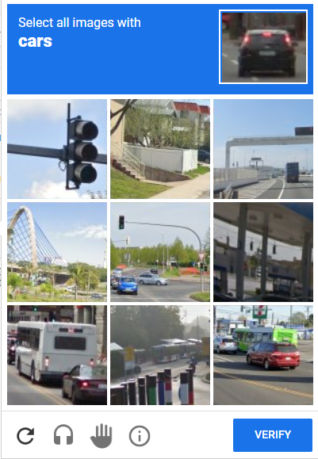
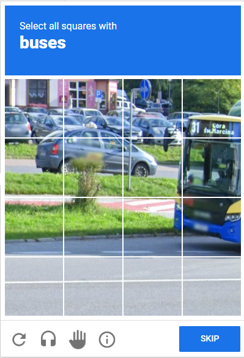
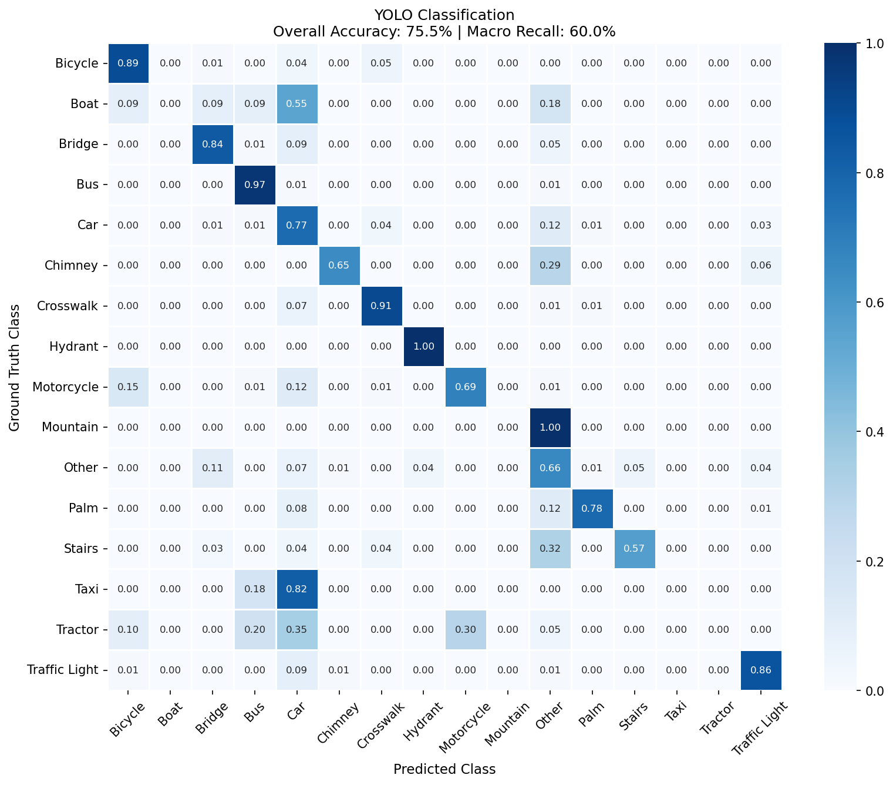
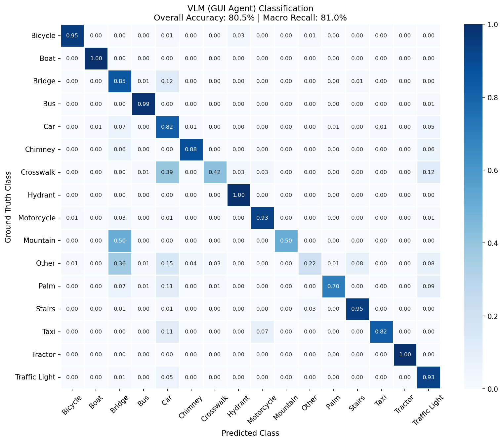
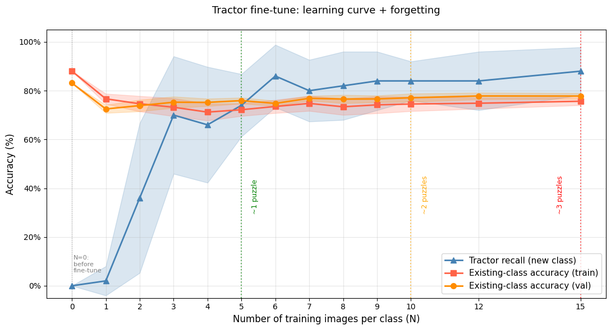
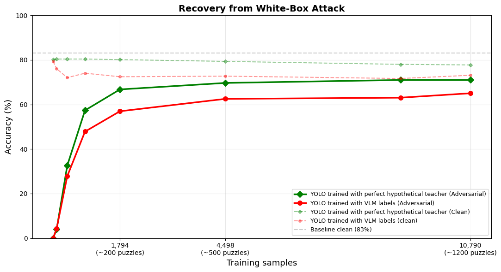
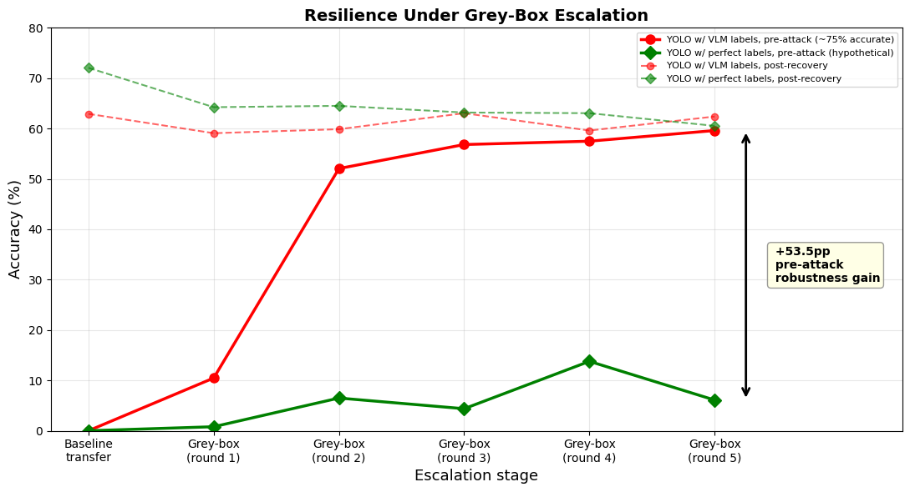

Classification (3x3): Select entire tiles containing target object

Classification (3x3): Select entire tiles containing target object

Segmentation (4x4): Click squares overlapping target object

Dynamic: Iteratively select until none remain
Our hybrid architecture combines three key components:

Complete system architecture showing end-to-end CAPTCHA solving pipeline. Step 1: Screenshot capture and YOLOv8 UI detection. Step 2: OCR extracts target object and determines puzzle type. Step 3: Hybrid routing to YOLO or VLM based on target class. Step 4: Model inference returns predictions. Step 5: FSM manages interaction, verification and recovery.
Our hybrid cascade approach outperforms both YOLO-only and VLM-only solutions across all 16 object classes.
85.4%
Overall Accuracy
+10.0pp over YOLO-only baseline
84.2%
Macro-Averaged Accuracy
+24.2pp over YOLO-only baseline
| Metric | YOLO | VLM (GUI Agent) | Hybrid |
|---|---|---|---|
| Overall Acc. (16 classes) | 75.48% | 80.52% | 85.44% |
| Overall Acc. (12 classes*) | 83.14% | 78.27% | 84.98% |
| Macro Acc. (16 classes) | 59.99% | 81.01% | 84.17% |
| Macro Acc. (12 classes*) | 75.21% | 76.61% | 81.60% |
| VLM calls | 0% | 100% | 30.0% |
| Avg. latency (per cell) | 4 ms | 225 ms | 71 ms |
| *Excludes four separately collected classes (Boat, Stairs, Taxi, Tractor). | |||

YOLO Classifier
75.5% overall, 60.0% macro accuracy

VLM GUI Agent
80.5% overall, 81.0% macro accuracy
For 4x4 segmentation puzzles, the hybrid combines YOLOv8x-Mask's geometric precision on supported classes with VLM's coverage on rare or unseen categories (Crosswalk, Stairs, Taxi).
| Model | Accuracy | Precision | Recall | F1-Score |
|---|---|---|---|---|
| YOLOv8x-Mask | 86.7% | 87.2% | 76.3% | 0.814 |
| VLM (BBox) | 81.6% | 73.9% | 80.1% | 0.769 |
| Hybrid | 88.6% | 85.6% | 84.3% | 0.850 |
Scope: the teacher-student paradigm requires that the VLM clearly outperform a fine-tuned YOLO baseline. That holds for classification (VLM macro recall 81.0% vs YOLO's 60.0%) but not for segmentation, where VLM (F1=0.769) falls below even the smaller YOLOv8m (F1=0.811), so the experiments below — distillation and adversarial recovery — focus on classification, where VLM-as-teacher is decisive.
Since VLM achieves high recall on classes where YOLO fails (Boat, Taxi, Tractor), its predictions can serve as labeled training data to fine-tune YOLO, converting expensive VLM reasoning into millisecond-scale reflexes. We use Experience Replay to prevent catastrophic forgetting: for each new class with N training images, we include N randomly sampled exemplars per existing class.
New-class recall as a function of training images (N) for each unsupported class, averaged over 10 seeds. Dashed lines indicate approximate puzzle equivalents.

Taxi: 96% recall at N=10 (~2 puzzles)

Tractor: 88% recall at N=15 (~3 puzzles)

Boat: 48% recall at N=6 (~1 puzzle)
Why the difference? Taxi images are almost exclusively yellow sedans -- visually consistent, easy to learn from few examples. Tractor images are more diverse but share a coherent structure. Boat images span wildly different visual concepts (rowboats, yachts, sailboats), making the class hard to learn from only 6 training samples.
The same VLM-as-teacher mechanism extends naturally to adversarial robustness: when PGD attacks defeat YOLO, VLM — largely unaffected by perturbations crafted against YOLO's gradients — can relabel the adversarial images for retraining. We test whether this enables autonomous recovery, and how the system holds up under iterative grey-box escalation where the defender re-crafts attacks each round.
Can a CAPTCHA defender craft adversarial perturbations to defeat the hybrid solver? We generate untargeted PGD attacks (epsilon=4/255, 10 steps) against the YOLO classifier.
100% → 0%
YOLO accuracy after PGD attack
78.7% → 75.0%
VLM accuracy on same adversarial images
(only 3.7pp drop)
The PGD attack completely defeats YOLO but barely affects VLM, since perturbations optimized against YOLO's gradients don't transfer to the architecturally distinct VLM. This means VLM can still label adversarial images correctly, enabling autonomous recovery through retraining.
To isolate the effect of label noise on recovery quality, we retrain YOLO on adversarial samples using two label sources: VLM predictions (the realistic deployment scenario, using our Qwen-7B VLM) and ground-truth (GT) labels (an upper bound representing what a hypothetical perfect teacher, such as a more capable model like GPT-4o, could approach). Comparing the two reveals the practical cost of imperfect labels — and, surprisingly, an unexpected benefit under iterative attack.

Autonomous Recovery: Adversarial accuracy vs training samples. VLM labels (red) incur a 6-10pp penalty vs GT (green). Robustness plateaus after ~2,000 samples.

Grey-Box Escalation: Over 6 rounds, VLM label noise causes the solver to diverge from the defender's surrogate, reaching a 53pp robustness gap.
Counterintuitively, VLM's ~25% label error rate provides an implicit defense against grey-box attacks. Because VLM mislabels a different subset of images at each round, the solver's decision boundaries diverge from the defender's surrogate. By round 2, the solver survives 52.1% of attacks that reduce the GT surrogate to 6.5%. This divergence stabilizes at ~53pp, functioning analogously to a cryptographic salt -- without knowing the exact noise pattern, the defender cannot craft perturbations that reliably damage the solver.
@inproceedings{anonymous2026nodom,
title={No DOM, No Cry: Human-Inspired CAPTCHA Solving via YOLO Reflexes and VLM Teachers},
author={Anonymous},
year={2026}
}